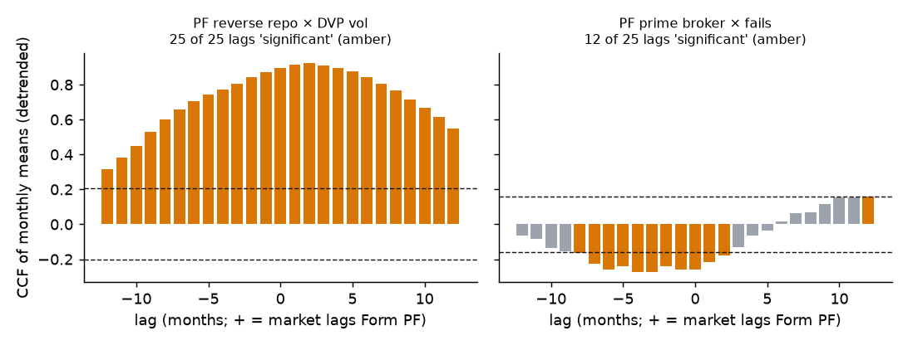
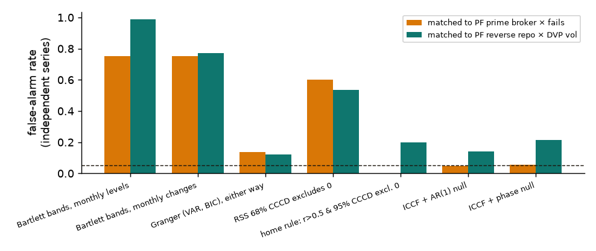
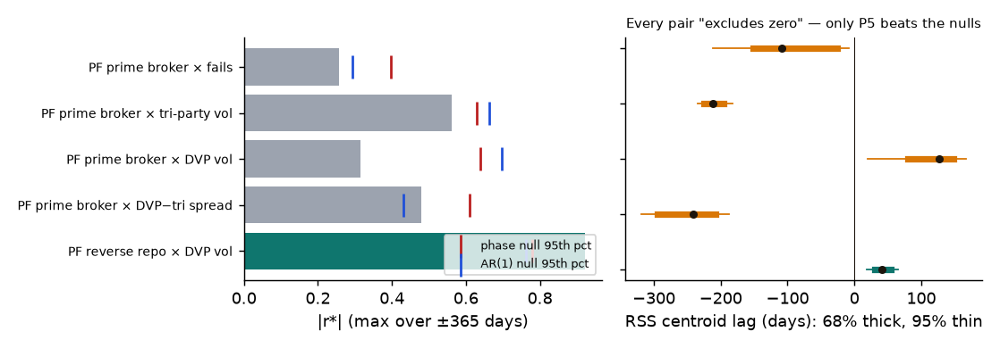
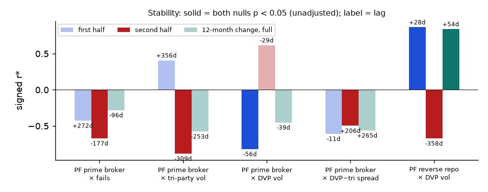
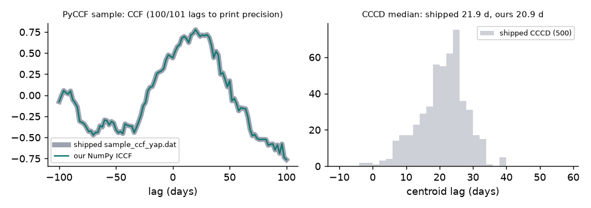

Interpolated cross-correlation (ICCF) with RSS lag distributions · from astrostatistics (reverberation mapping: light-echo delays in unevenly sampled quasar light curves)
How long after Form PF borrowing moves do repo markets follow?
What it isCross-correlates two unevenly sampled series by interpolation, then resamples points to give a distribution for the lag, no regridding.
VerdictInteresting. Home field: established (reverberation-mapping workhorse; reproducible; error bars known to be conservative; its lag-exists confidence ignores unrelated-series nulls).
Top pickMath (effort M): A calibrated lag confidence set: invert a persistence-matched peak test over τ instead of trusting the RSS centroid interval.
DataPublic aggregates: SEC Form PF 8.27 monthly; NY Fed fails, OFR DVP/tri-party weekly (2013–2025); descriptive
The one picture
Usual tool: monthly CCF with Bartlett bands (every lag "significant")

ICCF on native sampling, phase-null band, RSS lag distribution
👍 go ahead · 👎 drop · or just comment what you think
Notation
Symbol
Meaning
Here
\((t_i,x_i)_{i=1}^{n_1}\)
driver light curve (the quasar continuum), unevenly sampled
Form PF tab 8.27 borrowing, log, linear trend removed, 1 point per month (stamped at month end)
\((s_j,y_j)_{j=1}^{n_2}\)
response light curve (the emission line), sampled on its own times
weekly (Wednesday) log DVP volume, log tri-party volume, log fails, or the DVP − tri-party spread
\(\tau\)
lag; \(\tau>0\) means the response follows the driver
days, grid −365..+365 step 7
\(r(\tau)\)
interpolated cross-correlation function (ICCF)
Pearson correlation after interpolating one series onto the other's times shifted by \(\tau\)
\(\tau_{\rm peak},\ \tau_{\rm cent}\)
peak lag; centroid of \(r(\tau)\) over the points with \(r\ge 0.8\,r_{\max}\)
what the tables report
CCCD / CCPD
distribution of \(\tau_{\rm cent}\) / \(\tau_{\rm peak}\) over FR/RSS resamples
RSS only (no measurement errors published), 2,000 draws
Assumptions
Both series are noisy views of one smooth process, with the response a delayed (and smeared) copy of the driver; linear interpolation between samples is a fair guess of the unseen values.
The lag is constant over the window. The method measures where the peak is and how much it moves under resampling; the home field reads the share of resampled centroids above zero as the confidence that a lag exists (Peterson et al. 1998), which assumes a real echo is there to find.
RSS resampling (draw \(n\) points with replacement, keep the distinct ones) is treated as a stand-in for "another realization of the sampling". It does not resample the underlying red-noise process, which is why it can call a lag on two independent random walks.
The estimator
Step 1 · two one-sided correlationsInterpolate \(y\) at \(t_i+\tau\) and correlate with \(x_i\) (only points inside \(y\)'s span); separately interpolate \(x\) at \(s_j-\tau\) and correlate with \(y_j\). The ICCF is their average:
$$r(\tau)=\tfrac12\Big[\operatorname{corr}_i\big(x_i,\hat y(t_i+\tau)\big)+\operatorname{corr}_j\big(\hat x(s_j-\tau),y_j\big)\Big].$$
Means and variances are recomputed for the overlapping points at each \(\tau\) (Gaskell & Peterson 1987, as implemented in PyCCF).
Step 2 · peak and centroid\(\tau_{\rm peak}=\arg\max r(\tau)\); \(\tau_{\rm cent}=\sum_{r_k\ge 0.8r_{\max}}\tau_k r_k\big/\sum r_k\) over the contiguous run around the peak. A peak at the window edge gives no centroid (P4 and the P5 second half).
Step 3 · FR/RSS (Peterson et al. 1998)Repeat \(B\) times: draw \(n_1\) and \(n_2\) indices with replacement, drop duplicates (RSS); optionally add Gaussian noise of each point's error (FR); recompute \(\tau_{\rm cent}\). The 15.9/50/84.1 percentiles of the \(B\) centroids give the reported lag and 68% interval.
Step 4 · what we add: a null for \(r^*\)\(r^*=r(\tau_{\rm peak})\) with sign kept. Null 1: refit an AR(1) to each detrended series on its own sampling, simulate independent pairs with the fitted \(\phi\), detrend, record \(\max_\tau|r|\). Null 2: amplitude-adjusted phase randomization (AAFT) of each series. \(p=(1+\#\{|r^*_{\rm null}|\ge|r^*|\})/(1+N)\), \(N=1{,}000\); Holm over the five pairs. Size checked by simulation (C3).
Toy example (computed by cards/_toys/toys.py)
Driver \(x\) at \(t=0..9\): (0, 1, 3, 2, 4, 6, 5, 7, 6, 8). Response \(y\) sampled at \(t=0.5,2.5,\dots,8.5\) equal to \(x\) two steps earlier (interpolated). ICCF: \(\tau=0\): 0.928; \(\tau=1\): 0.965; \(\tau=2\): 0.967; \(\tau=3\): 0.895. The \(y\)-side correlation is exactly 1.000 at the true lag (4 points); the \(x\)-side is 0.935 because interpolating the sparse \(y\) blurs it. The peak is right but flat: one step off costs 0.002. That flatness is why a persistent series has a broad ICCF and why the centroid interval needs a null.
How it differs from the monthly CCF. The standard approach averages the weekly series to months and reads the cross-correlogram against Bartlett bands \(\pm1.96/\sqrt n\). Averaging throws away the weekly timing (lags come in 30-day steps), and Bartlett bands assume white noise, so on persistent series nearly every lag is "significant" (12–25 of 25 lags on our pairs). ICCF keeps each series on its own clock, gives lags in days, and with a persistence-matched null asks the right question: is this peak higher than two unrelated persistent series would give?
Followed: Peterson, Wanders, Horne et al. (1998), "On uncertainties in cross-correlation lags and the reality of wavelength-dependent continuum lags in active galactic nuclei", PASP 110:660 (arXiv:astro-ph/9802103; FR/RSS recipe as summarized in the PyCCF documentation and code); Gaskell & Peterson (1987) ICCF (cited by PyCCF; not read). Code: PyCCF V2.2 (Sun, Grier & Peterson, ASCL 1805.032, MIT) read line by line and ported; pyZDCF 1.0.3 (Jankov, MIT) for the ZDCF of Alexander (1997). Step 4 is ours. Toy: cards/_toys/toys.py.
What we found
Finding 1
DVP repo volume lags Form PF reverse-repo borrowing by about six weeks.
Monthly Form PF reverse-repo borrowing (log, detrended) against weekly OFR DVP repo volume, 2018-05..2025-12, no regridding: peak r* = 0.92, centroid +38.6 d, RSS 68% interval [+31, +54] d, 95% [+18, +65] d. Matched-persistence AR(1) null p = 0.001, phase-randomized (AAFT) null p = 0.001; the only one of five pre-registered pairs that passes Holm under both. ZDCF (home-field cross-check): +46 d, r 0.92. Twelve-month changes (2019-05..2025-12): r 0.84, peak +41 d, centroid +54 d, p 0.002 / 0.002.
Computed. Form PF months are stamped at month end; if the reported values are monthly averages, every lag shifts by about −15 d (so roughly +24 d). The 11-14 CRQA run put the PF-repo delay near four months; ICCF is sharper here.
False-alarm rate on independent series with our persistence

All five pairs: r*, lag, and null p

Finding 2
The home-field rule finds a lag in pure noise 54–60% of the time.
300 pairs of independent AR(1) series with our sampling and persistence. False "lag found" rates: RSS 68% interval excludes 0, 60% (P1 persistence) and 54% (P5); Bartlett bands on monthly levels 75% and 99%; on monthly changes 75% and 77%; Granger either way 14% and 12%. ICCF with our AR(1) null: 4.7% and 14%; phase null 5.7% and 21%.
Computed; 300 simulations, not the pre-registered 1,000, and P5 instead of P3. The refitted AR(1) null is too loose near a unit root (φ 0.965 monthly, 0.991 weekly). Post hoc: P5's r* 0.921 still beats the independent-pair 95th percentile (0.76–0.79) with persistence pushed to 0.995 / 0.999, p ≤ 0.001 (2,000 and 1,000 draws).
Stability: halves and changes

Home field: PyCCF sample, original vs our port

Finding 3
Prime-broker borrowing × fails: a −113-day lag the null cannot tell from chance.
Form PF prime-broker borrowing vs NY Fed financing fails (UST), 2013-04..2025-12: r* = −0.26 at −113 d (fails lead), RSS 68% [−151, −26] d, AR(1) p = 0.119, phase p = 0.50. ZDCF agrees on the shape (−146 d, −0.27). Halves disagree: 2013–19 −0.43 at +272 d, 2020–25 −0.67 at −177 d (p 0.002 / 0.004).
Consistent with the 11-14 to 11-20 nulls for prime-broker borrowing vs fails. The second-half link is significant alone, but its lag sits 450 days from the first half's.
Finding 4
The six-week lead holds in 2018–21 and is gone after 2022.
P5 first half (2018-05..2021-12): r 0.86, peak +41 d, centroid +28 d (RSS median +30 d), p 0.004 (AR1) / 0.002 (phase). Second half (2022–2025): the best |r| is −0.67 at −358 d, the edge of the ±365-day window, p 0.014 / 0.022: opposite sign, no usable lag.
Computed. Two halves only; the dating of the break is the New-use avenue (rolling windows).
Finding 5
As a forecasting aid it does not beat ARDL or SARIMAX.
Pre-registered: one-month change in log PF prime-broker borrowing, walk-forward 84 months (2019–2025), fails at the ICCF lag. RMSE: zero change 0.0571, OLS on lagged market 0.0566, ARDL own lags 0.0584, ARDL + ICCF-lag fails 0.0586 (−0.24%, DM p 0.47), SARIMAX(1,0,1) 0.0583, + X 0.0587. Exploratory (post hoc, DVP target, PF reverse repo driver, 60 months from 2021): ARDL + ICCF 0.0412 vs ARDL 0.0416 (+0.8%, DM p 0.88); OLS 0.0410, SARIMAX 0.0411.
Pre-stated bar (≥ 1% RMSE gain with DM p < 0.10) failed. The exploratory start moved from 2019 to 2021 after the first try had only 7 training months; labelled post hoc.
Who plays what
Home field (reverberation mapping)
Our data (Q1, public aggregates)
Continuum light curve (the driver), sampled when the telescope gets time
SEC Form PF tab 8.27 hedge-fund borrowing (prime broker, reverse repo), one point per month
Emission-line light curve (the echo), on a different cadence
Weekly NY Fed financing fails (UST), OFR DVP and tri-party repo volume, DVP − tri-party spread
Lag = light-travel time to the broad-line region (days)
Days between a move in Form PF borrowing and the matching move in the repo market
Seasonal gaps, unequal cadences
Monthly vs weekly sampling, series that start in different years (fails 2013, tri-party 2014, DVP 2018)
CCCD 68% interval as the lag error bar
Same, plus a persistence-matched null the home field does not use
Inputs and preprocessing
Form PF tab 8.27 monthly 2013-01..2025-12 (156 months; prime broker "Secured_Prime Broker", reverse repo "Secured_Reverse Repo"), stamped at month end.
Weekly: NY Fed primary-dealer financing fails, UST (PDFTD-USTET, 666 weeks from 2013-04-03); OFR tri-party volume (REPO-TRI_TV_TOT-F, daily averaged to Wednesday weeks, 593 weeks from 2014-08-27); OFR DVP volume and DVP − tri-party overnight spread (398 weeks from 2018-05-09).
Logs of volumes and fails; linear trend removed per series and window (pre-registered). Each pair uses its common span; no regridding.
Pre-registration written 14:29 ET before any run on these data (PREREG.md): pairs P1–P5, two nulls, Holm over five, a size study (C3) and a walk-forward benchmark (B).
C1 · the five pairs (levels, ±365 d)
Pair
r*
Peak lag
Centroid, RSS 68%
p AR(1)
p phase
P1 PF prime broker × fails
−0.26
−113 d
−109 [−151, −26]
0.119
0.50
P2 PF prime broker × tri-party
−0.56
−225 d
−211 [−225, −195]
0.17
0.19
P3 PF prime broker × DVP
+0.32
+118 d
+127 [+81, +149]
0.83
0.82
P4 PF prime broker × spread
+0.48
−358 d (edge)
none (edge)
0.021
0.33
P5 PF reverse repo × DVP
+0.92
+41 d
+42 [+31, +54]
0.001
0.001
Computed. Positive lag = the weekly market series follows Form PF. Every pair's 68% RSS interval excludes 0, so the home-field reading would report five lags. Only P5 passes Holm under both nulls. ZDCF (C4) agrees on P1 (−146 d), P2 (−231 d) and P5 (+46 d).
C2 · stability
P5: 2018-05..2021-12 r 0.86, centroid +28 d (p 0.004 / 0.002); 2022–2025 −0.67 at the window edge (p 0.014 / 0.022). Twelve-month changes over the full span: r 0.84, centroid +54 d (p 0.002 / 0.002).
P1: 2013–19 −0.43 at +272 d (p 0.022 / 0.12); 2020–25 −0.67, centroid −177 d (p 0.002 / 0.004); changes: −0.28 at −85 d (p 0.064 / 0.64). No stable lag.
The standard toolkit on the same pairs
Monthly CCF with Bartlett bands: 12, 16, 22, 15 and 25 of 25 lags outside the bands for P1–P5. For P5 the best monthly lag is +2 months (r 0.922): the same direction, at 30-day resolution.
Granger on monthly log differences (VAR, BIC lags), P5: DVP → PF reverse repo p 0.024, reverse repo → DVP p 0.57, the opposite direction to the level lag. Differencing removes the slow co-movement that carries the ICCF peak; the two describe different time scales.
B · walk-forward benchmark (pre-stated bar: ≥ 1% RMSE gain over ARDL with DM p < 0.10)
Pre-registered target: one-month change in log PF prime-broker borrowing, 84 months (2019-01..2025-12), expanding window, fails entered at the ICCF lag. RMSE: OLS on lagged market 0.0566, zero change 0.0571, SARIMAX(1,0,1) 0.0583, ARDL own lags 0.0584, ARDL + ICCF lag 0.0586 (−0.24%, DM p 0.47), SARIMAX + X 0.0587. Fail. Exploratory (post hoc, start moved to 2021-01): DVP change with PF reverse repo at the ICCF lag, ARDL + ICCF 0.0412 vs ARDL 0.0416 (+0.8%, DM p 0.88); OLS 0.0410; SARIMAX 0.0411.
Deviations from the pre-registration
C3 ran 300 simulations (not 1,000) and on P1 and P5 (not P3); the P5 persistence sensitivity (C3_p5_sens) is post hoc.
FR off throughout: none of these aggregates publishes measurement errors, so RSS only.
Home reproduction: 100 of 101 lags match the shipped PyCCF output to print precision; lag 0 differs by 9.7×10⁻⁴ (bar was ≤ 10⁻⁵). Cause: a duplicated timestamp in the sample file, handled differently by the shipped Cython interpolation; our port matches the pure-Python original to 2×10⁻¹³.
The exploratory benchmark moved its start from 2019 to 2021 after the first try had 7 training months.
Code and outputs: runs/2026-11-22/iccf/ (public aggregates; inputs are the lab's existing copies). Descriptive only, not a trading signal.
Established, with caveats (the reverberation-mapping workhorse; reproducible; its error bars are known to run conservative on home-field cadences; its "lag > 0" confidence is not tested against unrelated series)
What the home field has established
Origin and use. The ICCF (Gaskell & Peterson 1987) with flux randomization and random subset selection (Peterson et al. 1998, PASP 110:660) is the standard lag estimator for reverberation-mapping campaigns, distributed as PyCCF (Sun, Grier & Peterson, ASCL 1805.032) and wrapped by pipelines such as pyPETaL (whose documentation we read for the PyCCF interface).
Independent simulation study. Yu, Kochanek, Peterson et al. (2020, MNRAS 491:6045; abstract and method excerpt read) simulated damped-random-walk light curves and found that the FR/RSS centroid distribution overestimates the true lag scatter by about 3×, the peak distribution by about 1.5×, and JAVELIN's model-based errors are close to right (about 1.1×). FR-only or RSS-only variants can underestimate.
Method comparison. Li, Shen, Grier et al. (2019, SDSS-RM, ApJ 884:119; abstract and excerpts read): on simulated survey light curves JAVELIN and ICCF beat the ZDCF, and the ZDCF cannot detect lags shorter than the cadence.
Known limits. Linear interpolation assumes the light curve is smooth between points; long gaps and red noise produce broad, flat peaks; aliasing with the sampling pattern can add false peaks. The home field also reads the centroid distribution as evidence that a lag is real: Peterson et al. (1998; abstract read) report NGC 7469 continuum lags "greater than zero at no less than 97% confidence" from the share of resampled centroids above zero. That confidence comes from resampling the observed points, not from a null of two unrelated series.
Our reproduction
Check
Bar (pre-stated)
Result (computed)
Ported original vs shipped PyCCF output, 101 lags
≤ 10⁻⁵
100 lags match to print precision; lag 0 off by 9.7×10⁻⁴ (duplicate timestamp in the sample, Cython interpolation). Partial.
NumPy vectorized port vs original
≤ 10⁻¹⁰
2.1×10⁻¹³ on the sample; 4.2×10⁻¹⁵ on 50 random pairs. Pass.
Yu et al. direction: η = σest/σobs > 1 at home cadence
η > 1
η = 1.21 (200 DRW simulations, FR+RSS, true lag 20 d; bias −0.02 d). Pass (direction; we do not reach their 3× with this setup).
Planted 119-day lag at our P1 cadence, RSS only
report
bias −0.7 d, σobs 5.9 d, σest 5.3 d, η 0.90, 68% coverage 0.61: slightly too tight on our cadence.
Verdict for the home field: sound for what it claims. It locates a lag and gives a (usually conservative) error bar when a lag is known to exist. What breaks on transfer: in reverberation mapping the physics says an echo exists; in finance we do not know that, and our series are far more persistent than a quasar on a campaign's time scale. The 68% rule then finds "lags" between independent series 54–60% of the time (C3). With a persistence-matched null the method is usable; that null is our addition, and it is right-sized at P1 persistence (4.7%) and too loose near a unit root (14%), where we check sensitivity instead.
Other fields it could carry to: any pair of unevenly or differently sampled series where a delay is the quantity of interest: monthly survey vs weekly market data, quarterly filings vs daily prices, sensor networks with drop-outs, epidemiological reports on irregular dates.
1 · Engineering · Effort S
A batched ICCF engine, PyCCF as oracle
A NumPy (then Rust) core that computes the ICCF for all lags, all RSS draws and all null surrogates in one pass, so dozens of Form PF × repo pairs (by venue, tenor, collateral) can carry a full null on every run.
Math sketch. For fixed sampling, interpolation onto \(t_i+\tau\) is a sparse linear map \(W_\tau\) (two nonzeros per row). Stack all lags: \(\hat Y=W\,y\) with \(W\) of size \((L n_1)\times n_2\). RSS draws are index masks; surrogates are new \(y\) vectors, so \(W\) is built once and applied to a matrix of \(B\) columns. Masked means and variances per lag come from cumulative sums. Cost \(O(L(n_1+n_2)B)\) with no Python loop over lags or draws.
Why it matters here. Our NumPy port is already 10× faster than PyCCF (0.24 s vs 2.57 s for 500 draws, computed), and the 1,000-surrogate null, not the ICCF itself, was the slow part of C1 and C3.
Closest prior work: PyCCF V2.2 (Sun, Grier & Peterson, ASCL 1805.032; pure Python and Cython versions); pyPETaL's wrapper (documentation read). None found with a batched surrogate null.
Test (pass bar set now). \(r(\tau)\) within 10⁻¹² of the PyCCF port on the sample and 50 random pairs; 2,000 RSS + 2,000 null draws for P1 in under 2 s on the box; refitted-AR(1) null size within [0.03, 0.07] at P1 persistence (500 simulations).
2 · Math · Effort M · ★ Top pick
A calibrated lag confidence set
Replace "the 68% centroid interval excludes 0" with two calibrated statements: a detection test for the peak, and a confidence set for the lag built by inverting a test at each candidate \(\tau\).
Math sketch. Model the pair as \(y(s)=\beta x(s-\tau_0)+\varepsilon(s)\) with \(x,\varepsilon\) persistent (AR(1)/OU, \(\phi\) estimated with a bias correction for near-unit roots). Detection: \(T=\max_\tau|r(\tau)|\) against a parametric bootstrap from the fitted null with \(\beta=0\) (our Step 4, with a bias-corrected \(\phi\)). Lag set: for each \(\tau_c\), simulate from the fitted model with \(\tau_0=\tau_c\) and record \(D(\tau_c)=r(\hat\tau)-r(\tau_c)\); keep \(\tau_c\) if the observed drop is below the simulated \(1-\alpha\) quantile. The set can be disjoint (two candidate lags), which the CCCD cannot express.
Why it matters here. On our cadence the CCCD is slightly too tight (68% coverage 0.61) and on independent series it calls a lag 54–60% of the time; the refitted AR(1) null is right at P1 persistence but 14% at P5's. A test-inversion set fixes coverage by construction and makes the half-sample and rolling comparisons (Q1.3) meaningful.
Closest prior work: Alexander (2013), "Improved AGN light curve analysis with the z-transformed discrete correlation function", arXiv:1302.1508 (PLIKE: a likelihood interval for the ZDCF peak, abstract read); JAVELIN's damped-random-walk likelihood (Zu, Kochanek & Peterson 2011, cited by Yu et al. 2020; not read). Neither inverts a persistence-matched test.
Test (pass bar set now). 300 planted-lag pairs at P1 and P5 cadence and persistence: 68% and 95% coverage in [0.63, 0.73] and [0.92, 0.97]; 300 independent pairs: false "lag found" ≤ 0.05 at both persistences; applied to P5, report whether the set still excludes 0.
3 · New use on our data · Effort S
When did the six-week lead break? (Q1.3)
Rolling 36-month ICCF of Form PF reverse repo → DVP volume, stepped monthly, to date the end of the 2018–21 lead seen in C2.
Math sketch. For each window \(w\): \(r^*_w\), \(\tau_{{\rm cent},w}\), and the AR(1)-null 95% quantile \(q_w\). Break date \(\hat b\) = first month after which \(r^*_w<q_w\) for six consecutive windows. Null for \(\hat b\): circular block shifts of the DVP series (block 13 weeks), 999 shifts, statistic = the longest run of significant windows before the break.
Why it matters here. Q1.3 asks whether the PF–repo link breaks in regimes. C2 found a sign change between halves but cannot date it; the 11-14 CRQA and 11-20 LKIF runs both pointed to changes around 2022–2025.
Closest prior work: season-by-season lags are a common reverberation-mapping practice (as we understand it; no specific paper read today). No rolling-window ICCF with a dated break found for funding markets.
Test (pass bar set now). A break is reported only if the run statistic has block-shift p < 0.05 and the windows before it have a stable centroid (IQR ≤ 30 d); otherwise "no datable break".
Q1.1 · Lead/lag
Form PF reverse-repo borrowing leads OFR DVP repo volume by about six weeks (centroid +39 d, 68% [+31, +54] d; r 0.92; AR(1) and phase nulls p = 0.001; Holm over five pairs). Prime-broker borrowing shows no lag that beats chance against fails (−113 d, p 0.12 / 0.50), tri-party (p 0.17 / 0.19), DVP (p 0.83) or the spread (edge peak, p 0.021 / 0.33).
Q1.3 · Regime breaks
The reverse repo → DVP lead holds in 2018-05..2021-12 (r 0.86, centroid +28 d) and is replaced in 2022–2025 by a negative correlation at the window edge (−0.67). The PF prime broker × fails lag moves from +272 d (2013–19) to −177 d (2020–25). Dating the P5 break is the New-use avenue.
Method lesson for Q1
Monthly Bartlett bands and the home-field 68% rule both find lags between independent series most of the time (54–99%). Any future Q1 lead/lag claim should carry a persistence-matched null and a sensitivity check on the persistence.
Still missing: Form PF publication dates (for real-time leads) and whether tab 8.27 values are month-end or monthly-average (shifts lags by about −15 d if averages); measurement errors for any series (FR off). Public aggregates only; descriptive, not a trading signal. · All questions
Full tables, code and data notes: the 2026-11-22 edition · scripts in runs/2026-11-22/ · card sources in cards/iccf-lag/.